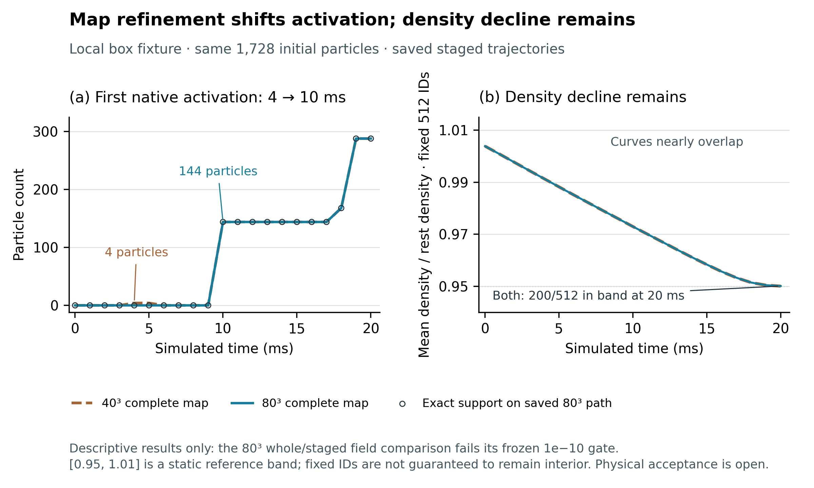
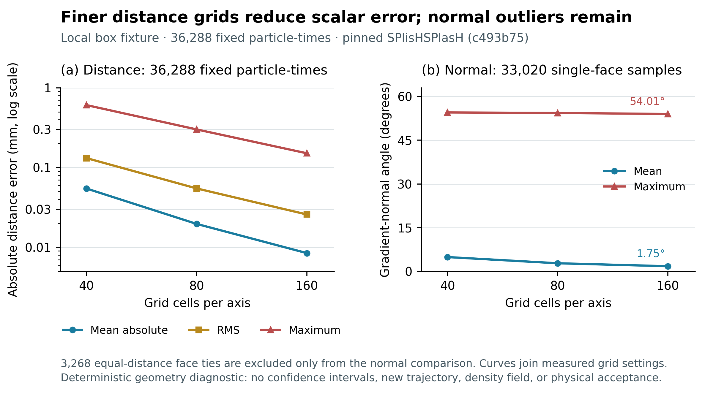
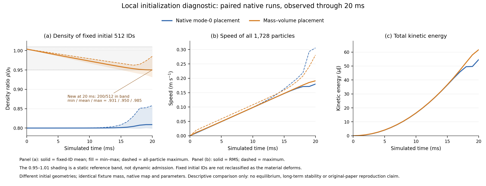
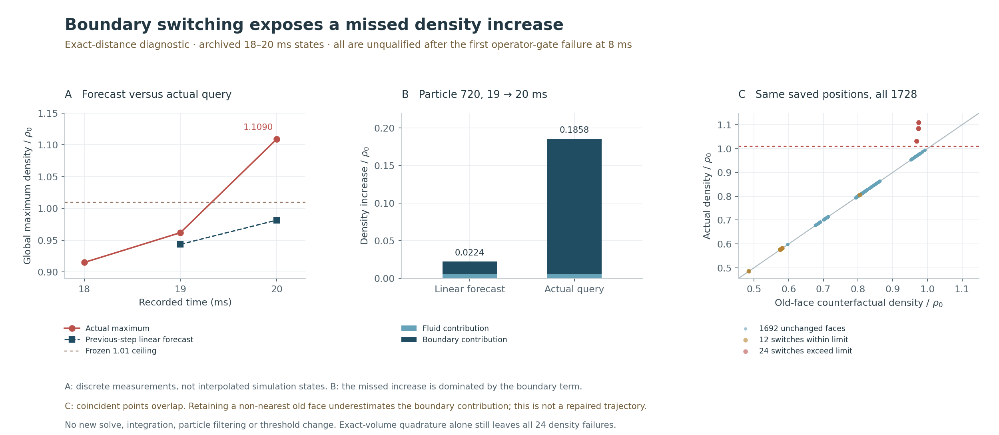

FLUID DIAGNOSIS · SOURCE RULES AND SHORT CONTROLS
Follow the fluid evidence
from failures to controls.
最新的完整 80³ 边界图已完成 20 ms 运行，但整体与分步路径的一致性检查在 18 ms 首次失败。加密地图使首次边界激活从 4 ms 移至 10 ms；密度下降仍在，两档地图到 20 ms 都只有 200/512 个固定粒子处于参考区间。
LATEST · COMPLETE 80³ MAP · NUMERICAL GATE FAILED
Activation changes; the density transient remains
The full 80³ map rebuilds both distance and density fields together with the pinned native source initializer. It passes 38 producer and 38 independent static checks. The subsequent 40³/80³ control keeps the same 1,728 initial particles, masses, physical parameters and executable.

Execution completed; consistency failed
Both paths reached 20 steps. The producer audit passes 39/40 checks; the independent audit passes 40/41. Both locate the same failed whole/staged field-equivalence gate, first at 18 ms. The complete paired prefix is only 17 ms.
There are 21 failed field–endpoint comparisons across seven endpoints, all in raw or applied density-gradient x/z components. The maximum normalized discrepancy is 4.044 × 10⁻¹⁰, above the frozen 1 × 10⁻¹⁰ gate. Its absolute difference is 8.070 × 10⁻¹³; a small absolute value does not waive the gate. No tolerance was changed or run repeated.
What the recorded control establishes
First native activation moves from 4 ms / 4 particles to 10 ms / 144 particles, matching the exact support window at the latter run’s sampled positions. Initial and terminal 80³ raw density queries contain no negative values; this does not prove global interpolation accuracy.
Both maps first lose full reference-band occupancy at 16 ms and end at 200/512. Mean density ratios at 20 ms are 0.950059 and 0.950104. Finer resolution did not resolve the density transient. The [0.95, 1.01] band is a static reference, not a new dynamic acceptance gate.
Post-failure data remain visible for diagnosis. Accurate contact, equilibrium, moving-wall coupling, long-term stability and the original eight physical-flow tests remain unqualified. This local calibration fixture is not a verified paper experiment volume. Next: explain gradient discrepancies and density change from saved states and pinned source equations before considering another trajectory.
All 21 matched times × two maps · CSV · All 2,196 field–endpoint comparisons · CSV · Results, failed gate and evidence hashes · JSON
NEW · FIXED-TRAJECTORY GEOMETRY STUDY
Measure the effect of distance-field resolution
Three source SDF grids were evaluated at the same 36,288 particle-time samples (21 times × 1,728 particles). Before refinement, the rebuilt 40³ distance and gradient matched the original complete map and all 418,176 saved positions bit for bit; its serialized field was also identical. A separate review passed 54 checks.

| Grid | Mean error (mm) | Maximum (mm) | Window FP / FN | Max normal error |
|---|---|---|---|---|
| 40³ | 0.05458 | 0.60685 | 280 / 0 | 54.53° |
| 80³ | 0.01965 | 0.30060 | 0 / 0 | 54.35° |
| 160³ | 0.00846 | 0.15104 | 0 / 0 | 54.01° |
FP/FN count mismatched particle-time samples for the SDF support-window predicate. Aggregate distance error decreases, but the finest grid still has a 0.151 mm maximum error and about 54° maximum gradient-normal discrepancy over uniquely nearest-face samples. The 3,268 tied-face samples have no assigned single normal.
What the finer grid resolves
The original 40³ SDF window already includes eight particles at 0 ms. Both finer grids first enter the window at 10 ms, matching exact geometry on this saved trajectory. This SDF-only predicate differs from the prior complete native map, which first activates at 4 ms.
What it does not establish
This geometry-only study computes no density field or new fluid trajectory. Zero window mismatches in these samples does not establish global accuracy, physical contact timing, correct wall forces or recovery of the 512→200 density count. The later complete-map control above separately builds both fields and runs dynamics; it retains a failed numerical gate and the density transient.
Resolution table · CSV · Measurements, source hashes and limits · JSON
NEW · ACTUAL 20 MS CONTROLS
A static density pass does not persist
The native source deliberately uses a reduced initial particle volume to avoid pressure. A separate local candidate derives spacing from the same fixture mass and target density. Both runs retain the same 1,728 particle masses, native radius, kernel, map and physical parameters. The new placement passes 32 static checks, then completes 20 ms with 33 numerical diagnostic checks.

What actually passed
Native whole-step and staged runs both completed 20 steps with 1 ms timesteps. Initial fields agree with the new static fixture. Source force, density upper bound, CG, operand-level time updates and momentum checks retain their frozen thresholds.
What remains open
This is a local initialization study, not author-default startup or a verified paper volume. Static wall queries were all inactive. Dynamic activation is recorded, but accurate wall coupling, equilibrium, viscosity calibration and long-term stability still need validation. The original eight physical-flow cases remain unqualified.
Independent geometry checks locate a further issue: the native interpolated map first activates four particles at 4 ms, although their exact box clearance is 3.223 mm, greater than the 2.693 mm support radius. Exact-box support first becomes active at 10 ms on the same saved trajectory. This comparison does not rerun the dynamics with an exact wall and does not prove a physical contact-time error or explain all density changes.
All matched-time measurements · CSV · Scope, endpoint metrics and hashes · JSON
RETAINED EARLIER FAILURE · DIFFERENT BOUNDARY CANDIDATE
Boundary-face transition diagnosis
The viscosity force-balance gate fails before the density failure. All plotted 18–20 ms states remain unqualified.
The 19 ms linear forecast peaks at 0.9816; the subsequent actual 20 ms query exceeds the frozen 1.01 ceiling.
All particle identities are retained. No particle filtering, new integration or threshold adjustment.
SOURCE-BOUND MEASUREMENTS
Separate the fluid and boundary terms

What the comparison establishes
At the same saved positions and with the same volume field, retaining the previous face lowers the all-particle maximum to 0.993016. This isolates a substantial contribution from face selection. Replacing only the volume query with direct exact-SDF quadrature still leaves 24 failures, with a peak of 1.094901.
The global linear forecast is below one and the archived pressure correction is zero. The observed discrepancy therefore cannot be explained by a large linear peak hidden behind an average stopping criterion in this transition.
What remains unresolved
The old-face calculation is not a repair. That face is no longer nearest, so retaining it underestimates the boundary contribution. It neither updates pressure nor generates a new trajectory.
The subsequent native density-map controls above use a coherent source representation for density, gradients, projected points and viscosity; they do not retroactively admit this earlier failed trajectory. Static initialization, operator accounting and actual integrated dynamics require separate checks. The original eight physical-flow benchmarks remain unqualified.
ALL DATA, INCLUDING FAILURES
Inspect the measurements
- All 1,728 particles at 20 ms · CSV — actual density, old-face calculation, face identity and unqualified-state labels.
- All 24 failures across both transitions · CSV — fluid/wall decomposition and linear forecast errors.
- Figure data, provenance hashes and scope · JSON.